Austin Elixir
Alembic
2016-06-20
Author
| limhoff@csd.org | Kronic.Deth@gmail.com | |
| @KronicDeth | @KronicDeth | |
| @KronicDeth |
API
| Step | JaSerializer | Your Code | Alembic |
|---|---|---|---|
| 1 | ContentTypeNegotiation |
||
| 2 | Deserializer |
||
| 3 | action | ||
| 4 | Document.from_json |
||
| 5 | Document.to_params |
||
| 6 | ToParams.nested_to_foreign_keys |
||
| 7 | Fetch.from_params |
||
| 8 | Fetch.Includes.to_preloads |
||
| 9 | PhoenixView |
Document.from_json
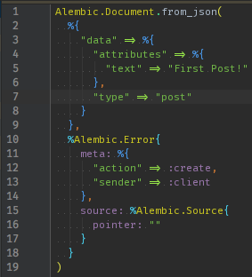
Empty Single Resource
 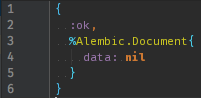
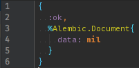
Present Single Resource
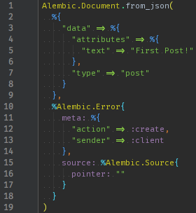
Present Single Resource Identifier


Present Collection


Relationships and Includes
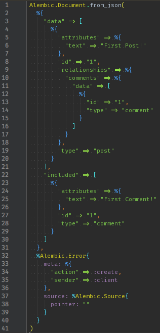
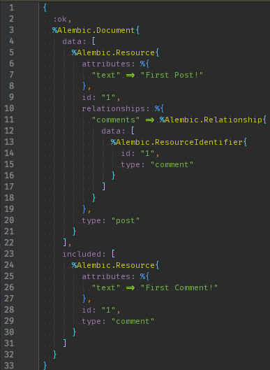
Errors
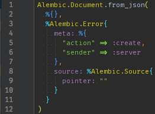
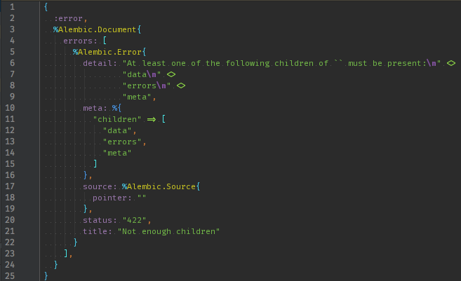
Nested Errors


FromJson.from_json

Error.descend
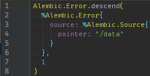
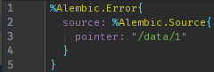
FromJson.merge
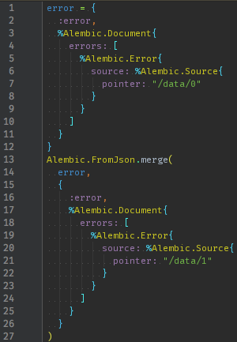

FromJson.reduce

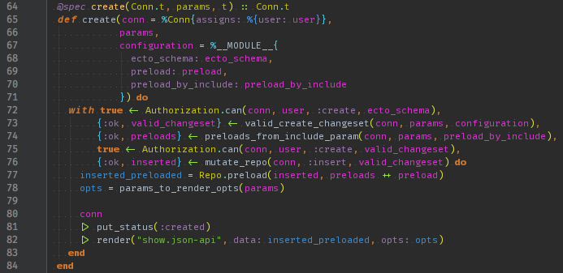
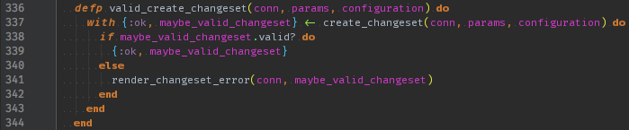
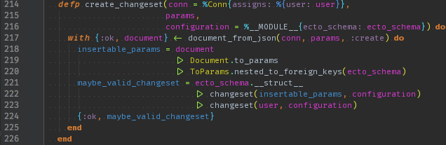
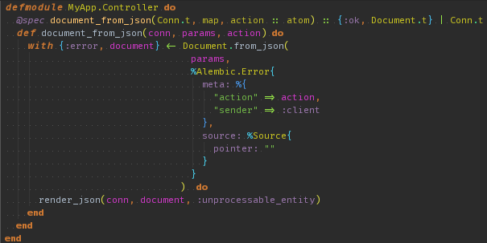

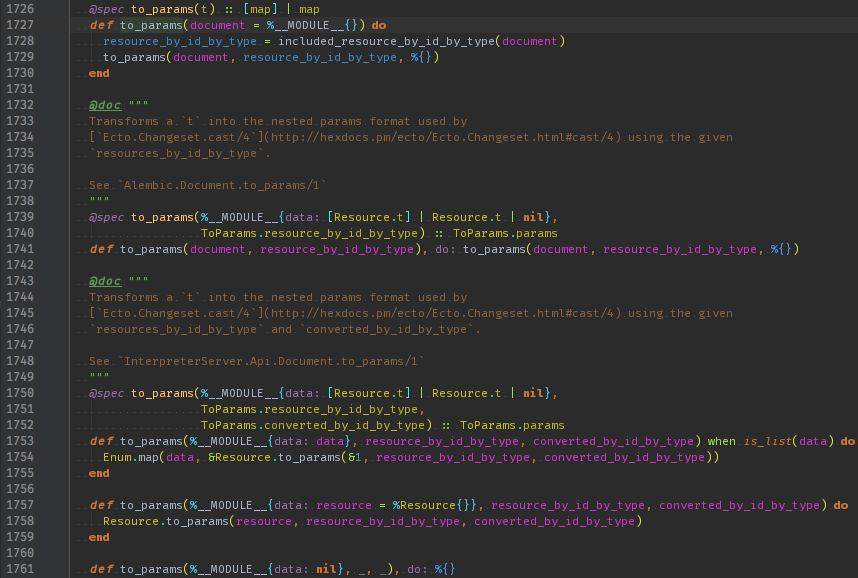

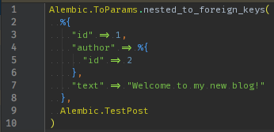

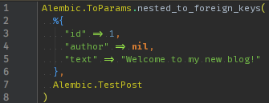

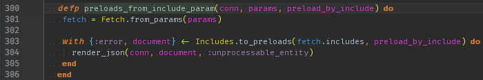
 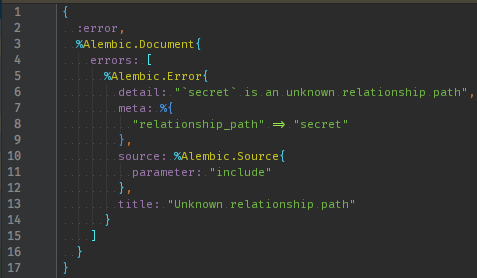
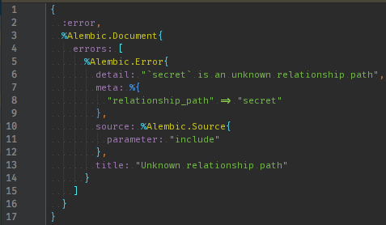
API
| Step | JaSerializer | Your Code | Alembic |
|---|---|---|---|
| 1 | ContentTypeNegotiation |
||
| 2 | Deserializer |
||
| 3 | action | ||
| 4 | Document.from_json |
||
| 5 | Document.to_params |
||
| 6 | ToParams.nested_to_foreign_keys |
||
| 7 | Fetch.from_params |
||
| 8 | Fetch.Includes.to_preloads |
||
| 9 | PhoenixView |
Client
| Step | Alembic |
|---|---|
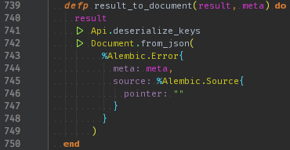
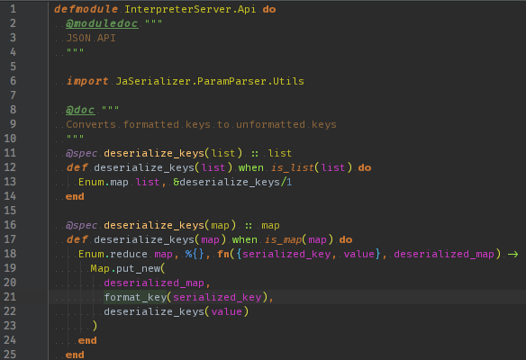
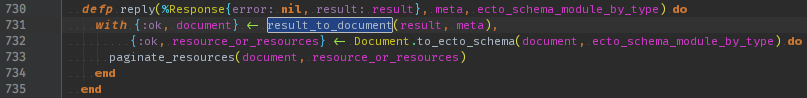
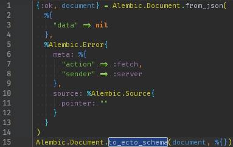
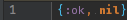
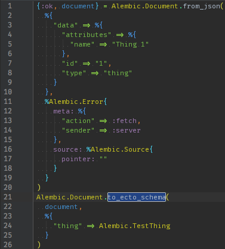
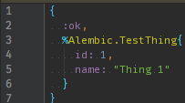
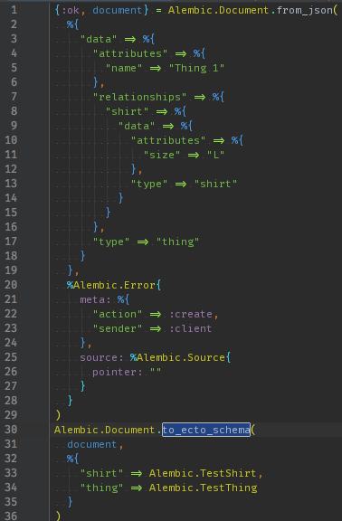
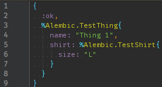
| JSONAPI | Ecto.Schema |
|---|---|
| attributes | fields |
| relationships | associations |
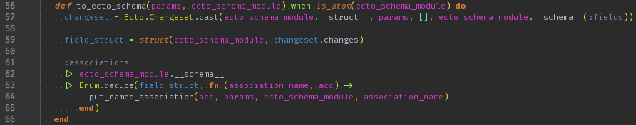
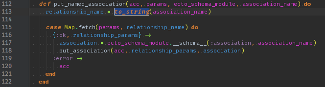

| Client | Server | |
|---|---|---|
| API | ✓ | ✓ |
| RPC | ✓ | ✓ |